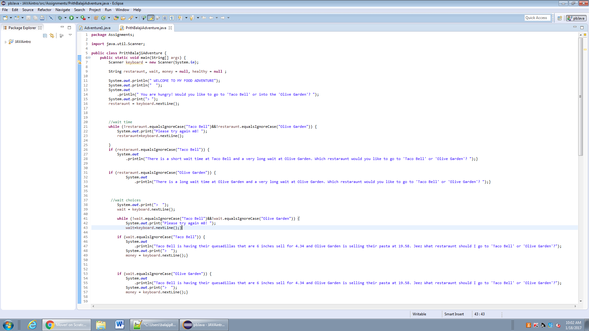
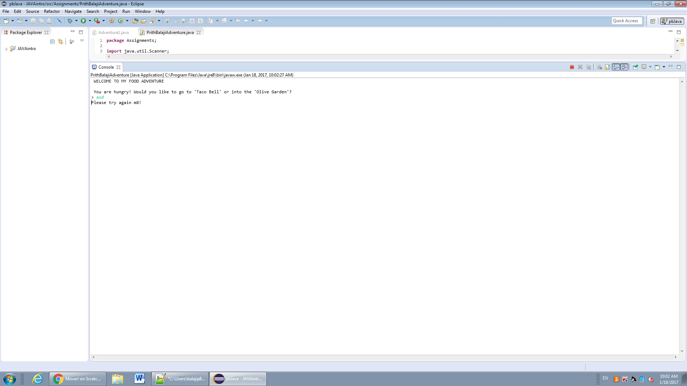

Java Content
 
Description of Java final project
The story is about the user's choice of which restaraunt to go to either Taco Bell or Olive Garden. If anyother "" is written then the program is stopped and will say "Please Try again m8". It will repeat the question trying to change yopur mind. Whatever the last answer was then that is what restraunt you will go to.
Concepts Learned
- Importing a scanner
- Using if statements in java
- Learning how to organize the braces
- Using the statement if (restaraunt.equalsIgnoreCase(""))
- Learning methods such as nextLine